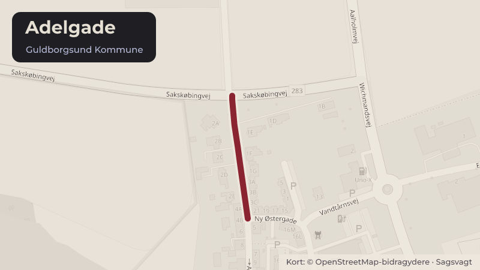

Besluttet 23. november, Teknik-, Natur- & Miljøudvalget, Guldborgsund
Nedrivning af bevaringsværdige bygninger - Adelgade 39, 4880 Nysted

Kort fortalt
- Forslaget
- Der dispenseres fra Lokalplan 132 til nedrivning af det bevaringsværdige baghus på adressen
- Hvem
- Teknik-, Natur- & Miljøudvalget, Guldborgsund Kommune
- Hvornår
- Mandag 23. november 2026
- Status
- Besluttet. Godkendt. Udvalget opfordrer til mest mulig genanvendelse af materialerne. UDVALGTE.Beslutningen er forkortet her. Læs hele beslutningen
Er noget forkert her? Skriv til os
Læs hele sagen Kommunens egen tekst
Indstilling
Direktionen indstiller til Teknik-, Natur- og Miljøudvalget:
1. at der dispenseres fra Lokalplan 132 til nedrivning af det bevaringsværdige baghus på adressen
Adelgade 39, 4880 Nysted.
Sagsfremstilling
Baghusets placering kan ses i bilaget Kortoversigt.
Ansøgningen er indsendt på baggrund af en tilstandsvurdering, der konkluderer, at baghuset fremstår
væsentligt nedslidt med betydelige sætningsskader og fare for sammenstyrtning.
Ejeren har købt ejendommen i 2021 med planer om blandt andet at renovere og ombygge baghuset.
Ansøgningen om nedrivning kommer på baggrund af, at ejers rådgiver ved fysisk besigtigelse har vurderet,
at baghuset er i så dårlig stand, at der er risiko for sammenstyrtning. Det er rådgivers vurdering, at en
renovering til redning af baghuset vil være urealistisk.
Ansøgningen beskriver generelt mislighold af baghuset, som er opført i 1870 og dermed er over 150 år
gammelt. Den primære baggrund for nedrivningsansøgningen bunder i de væsentlige sætningskader, som
generelt beskrives ved bygningen, men som i særlig høj grad gør sig gældende ved den sydvendte gavl.
Det er rådgivers vurdering, at den traditionelle konstruktion, som vurderes uændret siden opførslen, ikke
har sikret baghuset mod kraftig vind. Det vurderes at have medvirket til, at tagryggen i dag har bevæget
sig mellem 50-60 cm mod syd. Rådgivers analyse, billedmateriale og ansøgning om nedrivning på vegne af
ejer kan ses på bilaget Ansøgning. Baghusets placering kan ses på bilaget Kortoversigt.
Udpegning som bevaringsværdig i lokalplanen og registreret med SAVE-værdi 3:
Ifølge Lokalplan 132's § 12.1 må bevaringsværdige bygninger og baghuse ikke nedrives eller ombygges
uden Byrådets særlige tilladelse. Baghuset, som nærværende sag handler om, er udpeget som
bevaringsværdigt af lokalplanen. Tilladelse til nedrivning kræver derfor en dispensation fra
lokalplanen. Registreringen ses på lokalplanens Kortbilag 3, der er vedlagt som bilag til sagen.
Ifølge Guldborgsund Kommunens delegationsplan 2026-2029 er det udvalget, som skal træffe beslutning
om nedrivningen af bygninger, der er udpeget som bevaringsværdige i en lokalplan, eller hvis de har en
bevaringsværdi på 1, 2 eller 3.
Baghuset blev registreret med SAVE-værdi 3 i 1993. Registreringen ses på bilaget FBB.
• Bevaringsværdier efter SAVE-metoden bestemmes ud fra en samlet vurdering af 5 punkter.
Bygningens arkitektoniske, kulturhistoriske, miljø-, originalitets- og tilstandsmæssige værdi
• Værdierne vægtes i grove træk efter denne rækkefølge. Det vil sige, arkitektonisk værdi vægter
højere end tilstandsværdien
• SAVE-skalaen går fra 1-9, hvor 1 er den højeste bevaringsværdi.
Administrationens vurdering af bygningen:
Administrationen vurderer, at baghuset fortsat besidder en vis bevaringsværdi, men at de omfattende
konstruktive skader og risikoen for sammenstyrtning har reduceret mulighederne for en realistisk bevaring
væsentligt. Bygningen kan ikke længere opretholde en SAVE-værdi på 3, men der er ikke foretaget en ny
fuldstændig SAVE-registrering. Baghuset har som bagbygning ikke samme visuelle eller bymæssige
betydning for Adelgades gadeforløb som ejendommens stuehus.
Det vurderes ikke, at hensynet til bygningens bevaringsværdi vil kunne stå mål med de nødvendige
indsatser for at sikre og restaurere bygningen.
Sammenhæng til politiske strategier
Gode rammer for at bo og udvikle sig.
Økonomi
Sagen har ingen bevillingsmæssige konsekvenser.
HØRING
Nedrivningsanmeldelsen er offentliggjort efter planlovens § 18, stk. 2, på kommunens hjemmeside og
naboer og foreninger er orienteret. Høringsfristen løber fra den 20. oktober 2026 frem til den 19.
november 2026. Eventuelle høringssvar fremlægges på udvalgsmødet den 23. november 2026 og ses på
bilagene Høringssvar.
Beslutning
Fraværende: Ole Bronné Sørensen (A) - Fravær grundet ferie - i stedet deltog Yarvus Sari
Godkendt. Udvalget opfordrer til mest mulig genanvendelse af materialerne.
UDVALGTE
Bilag
- Offentlig
- FBB
- Offentlig
- LP 132 - Kortbilag 3
- Offentlig
- Kortoversigt
- Offentlig
- Ansøgning
- Offentlig
- Høringssvar - Guldborgsund Bevaringsfond - Adelgade 39, 4880 Nysted
- Offentlig
- Høringssvar - Nysted Bevaringsforening og Nysted Facaderåd - Adelgade 39,
- 4880 Nysted
- Offentlig
- Høringssvar - Museum Lolland-Falster - Adelgade 39, 4880 Nysted
- Offentlig
- Høringssvar - Kulturmindeforeningen - Adelgade 39, 4880 Nysted
Kilde: Guldborgsund Kommune, Teknik-, Natur- & Miljøudvalget, referat fra mødet mandag 23. november 2026, punkt 9. Læs den originale sag hos kommunen.
Bydele i sagen: Nysted
Steder i sagen: Adelgade